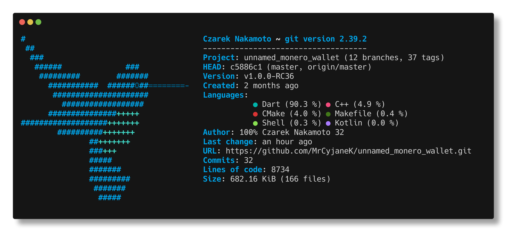

Unnamed Monero Wallet
Unnamed Monero Wallet is built on cutting edge technology and is made available for many platforms as I can get my hands on.
Features
- All basic wallet features (sending, receiving, transaction history)
- Tor and I2P support with automatic proxy switching
- Embedded Tor (android only)
- Message signing and verification
- Polyseed support
- Multiple accounts
- Stealth mode
- Pin and password wallet lock
- Background Sync #8619
- Historically accurate Fiat conversion (without sending any external requests)
- Offline and view-only mode via URQR (mobile) and text (QubesOS)
- ... and more!
Downloads
Android
Android builds can be downloaded from static.mrcyjanek.net. This is an universal build compatible with all android architectures (except for experimental RISC-V).
Download Download (stealth)Linux
Currenty `glibc`-based linux distributions are supported, with repository being available for debian-based systems.
Using tarball or .deb without repository
Download .tar.gz Download .debUsing .deb depository
apt update
apt install -y curl apt-transport-https
sudo curl https://git.mrcyjanek.net/api/packages/mrcyjanek/debian/repository.key -o /etc/apt/keyrings/gitea-mrcyjanek.asc
echo "deb [signed-by=/etc/apt/keyrings/gitea-mrcyjanek.asc] https://git.mrcyjanek.net/api/packages/mrcyjanek/debian no-distro main" | sudo tee -a /etc/apt/sources.list.d/gitea.list
sudo apt update
sudo apt install xmruwSailfishOS
The recommended way is to download the app from OpenRepos (using storeman), however .rpm builds are available here. Currently only aarch64 is supported and for devices running on sailfish older than 4.6 a manual fix is required.
QubesOS
xmruw can be used on qubes the same way as on debian or other linux distro, but there is a way to benefit from QubesOS security and to create a secure setup by using offline and online wallet in sebarate qubes.
There is a text and video tutorial on how to use QubesOS to create a secure monero wallet setup
- Instructions (GitHub mirror)
- 📹 1. Creating xmruw template qube
- 📹 2. Installing xmruw in template qube [commands to copy]
- 📹 3. Creating offlien wallet AppVM
- 📹 4. Creating online wallet AppVM
- 📹 5. Restoring offline and online wallet
- 📹 6. Sending a transaction
p.s. there were some visual bugs in the UI, they will get fixed.